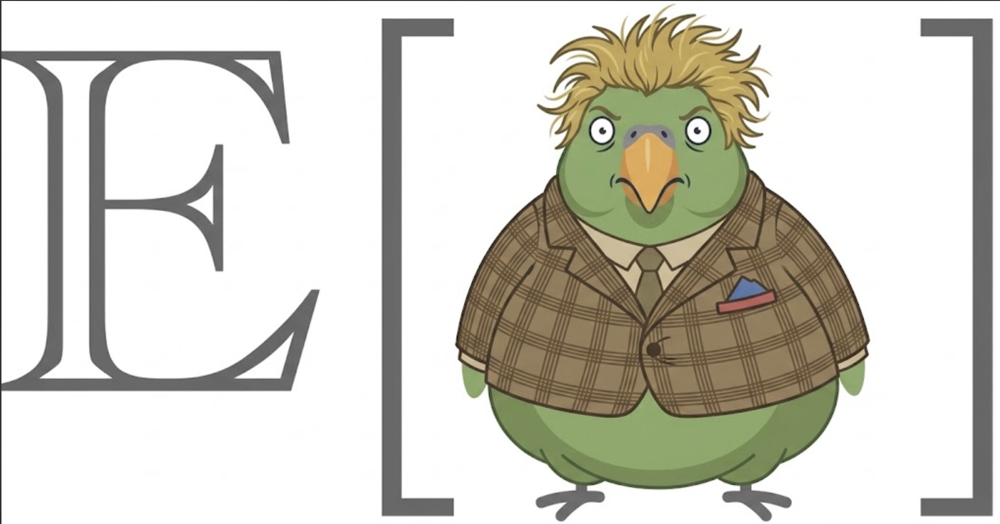

A pricing call with Jordan
A worked Tommy tutorial: construct a voice AI buyer, practice the call, and turn the transcript into evidence-linked coaching.

The situation
Alex Rivera sells Expected Parrot, an AI research platform. Tomorrow Alex will speak with Jordan Chen, Head of UX Research at Acme. Jordan has seen a demo, leads a six-person team, and is interested—but is skeptical about simulated-research validity and whether a $15,000 monthly contract can be approved.
We want Alex to practice aloud with a voice interview AI that plays Jordan. The buyer should press on validity and budget, but remain open to a technical follow-up if Alex asks useful questions and earns it. Afterward, we want a transcript-grounded score and a shorter drill aimed at the weakest part of the call.
Tommy separates three things: the scoring standard, reusable buyer behavior, and facts about this deal. We will construct each explicitly.
Start a project
tommy init ep-practice --name "Expected Parrot enterprise practice"
cd ep-practiceShow JSON response
{
"schema_version": 1,
"status": "ok",
"command": "tommy init",
"data": {
"project": "/work/ep-practice",
"marker": "/work/ep-practice/tommy.json"
},
"warnings": [], "errors": [], "next_steps": ["cd /work/ep-practice", "tommy guide"]
}Define what good looks like
A scorecard is independent of any one buyer. Here we make one group and two criteria. Add more criteria the same way when they matter.
tommy scorecard create --id enterprise-call --name "Enterprise sales call"
tommy scorecard add-group \
--scorecard enterprise-call \
--id conversation \
--name "Conversation"
tommy scorecard add-criterion \
--scorecard enterprise-call \
--group conversation \
--id discovery \
--name "Discovery" \
--description "Asks useful questions before proposing a solution." \
--max-score 2
tommy scorecard add-criterion \
--scorecard enterprise-call \
--group conversation \
--id close \
--name "Next step" \
--description "Earns and clearly confirms a bounded next step." \
--max-score 2Show JSON responses
{
"status": "ok",
"command": "tommy scorecard create",
"data": {"id": "enterprise-call", "name": "Enterprise sales call", "groups": []}
}
{
"status": "ok",
"command": "tommy scorecard add-criterion",
"data": {"scorecard_id": "enterprise-call", "group_id": "conversation", "criterion_id": "close"}
}Construct the reusable voice buyer
The template says how the simulated buyer behaves. It does not claim that Jordan will actually behave this way. The default mode is voice; we state it here because it is central to this practice.
tommy template create \
--id skeptical-research-leader \
--name "Skeptical research leader" \
--call-type "Pricing follow-up" \
--scorecard enterprise-call \
--buyer-name "Jordan Chen" \
--buyer-role "Head of UX Research" \
--buyer-behavior "Direct and skeptical, but candid when the seller asks specific questions." \
--success-condition "Offer a 30-minute technical validation session if the seller earns it." \
--mode voice \
--duration-minutes 12 \
--difficulty tough_but_winnable \
--opening mid_conversationShow JSON response
{
"schema_version": 1,
"status": "ok",
"command": "tommy template create",
"data": {
"id": "skeptical-research-leader",
"mode": "voice",
"duration_minutes": 12,
"difficulty": "tough_but_winnable",
"objections": []
},
"warnings": [], "errors": [], "next_steps": []
}Now give that buyer objection territory. The prompt tells the AI what concern to raise; the optional follow-up prevents a superficial answer from resolving it.
tommy template add-objection \
--template skeptical-research-leader \
--name "Validity" \
--prompt "How can simulated respondents support decisions about real customers?" \
--follow-up "Ask what evidence would make the seller trust the method."
tommy template add-objection \
--template skeptical-research-leader \
--name "Budget" \
--prompt "Why should I spend this much before the team has validated it?"Show JSON responses
{
"status": "ok",
"command": "tommy template add-objection",
"data": {"template_id": "skeptical-research-leader", "objection_count": 2}
}Add only the known deal facts
The deal is the actual opportunity context supplied to Tommy. Keeping it separate means a useful reusable persona does not silently become CRM history.
tommy deal create \
--id acme-research \
--name "Acme research platform evaluation" \
--seller-company "Expected Parrot" \
--offering "AI-assisted research platform" \
--price '$15,000 per month' \
--prospect-company "Acme" \
--industry "Software" \
--buyer-name "Jordan Chen" \
--buyer-role "Head of UX Research" \
--stage evaluation \
--objective "Earn a technical validation session" \
--history "Jordan saw a demo and leads a six-person research team."
tommy deal add-objection \
--deal acme-research \
--text "Budget has not been approved."Show JSON responses
{
"status": "ok",
"command": "tommy deal create",
"data": {"id": "acme-research", "prospect": {"company": "Acme", "buyer_name": "Jordan Chen"}}
}
{
"status": "ok",
"command": "tommy deal add-objection",
"data": {"deal_id": "acme-research", "objection_count": 1}
}Prepare, inspect, and launch
Preparing freezes the selected template, deal, scorecard, and settings into a versioned practice. Building exports the buyer guide, manifest, and native EDSL survey to a named directory under the current working directory. Expected Parrot never needs to read Tommy’s private .tommy state.
tommy practice prepare \
--template skeptical-research-leader \
--deal acme-research \
--id jordan-pricing
tommy practice build \
--practice jordan-pricing \
--output-dir runs/jordan-pricingShow JSON responses
{
"status": "ok",
"command": "tommy practice build",
"data": {
"practice_id": "jordan-pricing",
"output_dir": "/work/ep-practice/runs/jordan-pricing",
"guide": "/work/ep-practice/runs/jordan-pricing/buyer-guide.md",
"survey": "/work/ep-practice/runs/jordan-pricing/survey.ep"
}
}Preview is read-only. It lets you verify the voice experience before creating a live respondent study.
tommy practice preview --practice jordan-pricingShow JSON response
{
"status": "ok",
"command": "tommy practice preview",
"data": {"practice_id": "jordan-pricing", "preview_url": "https://…", "external_state_created": false}
}Deployment creates a private Expected Parrot respondent study. Run it only after the preview is acceptable.
tommy practice deploy --practice jordan-pricing --confirmShow JSON response
{
"status": "ok",
"command": "tommy practice deploy",
"data": {"practice_id": "jordan-pricing", "uuid": "<human-survey-uuid>", "respondent_url": "https://…"}
}Alex opens the respondent URL and has the voice conversation. When it is complete, fetch that response as a distinct attempt. The native response export is visible in the named run directory.
tommy attempt fetch \
--practice jordan-pricing \
--uuid <human-survey-uuid> \
--rep "Alex Rivera" \
--buyer "Jordan Chen" \
--id alex-round-1 \
--output-dir runs/alex-round-1Show JSON response
{
"status": "ok",
"command": "tommy attempt fetch",
"data": {
"id": "alex-round-1",
"turn_count": 18,
"responses": "/work/ep-practice/runs/alex-round-1/responses.ep"
}
}If the transcript came from another recorder, import it instead. Text and JSON transcripts are accepted; importing does not call an external service.
tommy attempt import \
--practice jordan-pricing \
--transcript transcript.json \
--rep "Alex Rivera" \
--buyer "Jordan Chen" \
--id alex-round-1Show JSON response
{
"status": "ok",
"command": "tommy attempt import",
"data": {"id": "alex-round-1", "practice_id": "jordan-pricing", "turn_count": 18}
}Evaluate the transcript
Review preparation creates native EDSL Jobs but does not run a model. The returned ep run command is the explicit inference boundary. Both Jobs and Results live in the run directory—not in .tommy.
tommy review prepare \
--attempt alex-round-1 \
--model gpt-5.4-mini \
--output-dir runs/alex-round-1Show JSON response
{
"status": "ok",
"command": "tommy review prepare",
"data": {
"attempt_id": "alex-round-1",
"jobs": "/work/ep-practice/runs/alex-round-1/review.jobs.ep",
"expected_results": "/work/ep-practice/runs/alex-round-1/review.results.ep",
"estimated_model_calls": 1
}
}ep run \
--jobs runs/alex-round-1/review.jobs.ep \
--output runs/alex-round-1/review.results.epShow representative JSON output
{
"status": "completed",
"output": "runs/alex-round-1/review.results.ep"
}Register validates the review against the scorecard and verifies that every evidence reference points to a real transcript turn. Then render the standalone HTML coaching report.
tommy review register \
--attempt alex-round-1 \
--results runs/alex-round-1/review.results.ep
tommy report \
--attempt alex-round-1 \
--output-dir runs/alex-round-1Show JSON responses
{
"status": "ok",
"command": "tommy report",
"data": {
"attempt_id": "alex-round-1",
"report": "/work/ep-practice/runs/alex-round-1/report.html",
"score": 63,
"standalone": true
}
}Practice the weakest moment again
Suppose “Next step” was the weakest criterion. Tommy can derive a five-minute practice from the reviewed attempt while preserving its provenance. Build it into a new named directory and preview it before deployment.
tommy drill prepare \
--attempt alex-round-1 \
--criterion close \
--id alex-closing-drill
tommy practice build \
--practice alex-closing-drill \
--output-dir runs/alex-closing-drill
tommy practice preview --practice alex-closing-drillShow JSON responses
{
"status": "ok",
"command": "tommy drill prepare",
"data": {
"id": "alex-closing-drill",
"kind": "targeted_drill",
"parent_attempt_id": "alex-round-1",
"target_criterion_id": "close"
}
}After a second reviewed attempt, compare both rounds criterion by criterion.
tommy compare --attempt alex-round-1 --attempt alex-round-2Show JSON response
{
"status": "ok",
"command": "tommy compare",
"data": {"attempt_ids": ["alex-round-1", "alex-round-2"], "overall_change": 18}
}When JSON is the better interface
The keyword commands make construction legible and are useful when an agent is learning the domain with you. Tommy also keeps bulk JSON ingestion for definitions you already maintain, or when an agent should minimize tool calls. These commands produce the same canonical components:
tommy scorecard add scorecard.json
tommy template add template.json
tommy deal add deal.jsonShow JSON response
{
"status": "ok",
"command": "tommy template add",
"data": {"id": "skeptical-research-leader", "path": "/work/ep-practice/.tommy/templates/skeptical-research-leader.json"}
}The hidden path above is Tommy’s canonical project state. It is not an export path and is never passed to ep run. Runnable artifacts always go to the explicit --output-dir you chose.